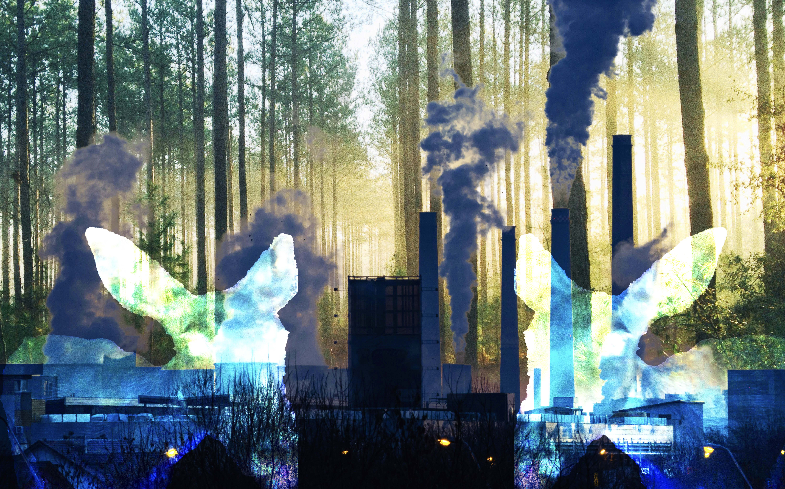

For my first montage I used the backdrop of a forest, and overlaid images of industrial smokestacks and the heads of two deer. The issue I wanted to comment on with this image is Climate change and the current destruction of the natural world. I wanted to juxtapose the image of rows of trees with rows of chimneys from power plants( a similar image with very different meanings). In the image, I wanted to create a ghost-like presence of nature within our industrial society by making the deer a looming presence over the image and making them bright and translucent. It is meant to be a comment on environmental displacement and how the woods are still here, but they are being choked out by the machinery and greed of the modern world. For my second image I chose the issue of surveillance state. This image is meant to be a message on the loss of privacy in the modern day. I chose to place a cowboy which is seen as the collective symbol of American autonomy and freedom under a grid of surveillance cameras.The image is meant to ask the question “is a life like this possible of living under constant surveillance”. The old photo of the woman with the camera acts as a reminder that we have officially transitioned from being the ones capturing the moment to being the ones captured by the system. The women and the CCTV cameras juxtaposed the previous meaning and use of photos in the past. the images i used were from the internet archive and unsplash.
HOME